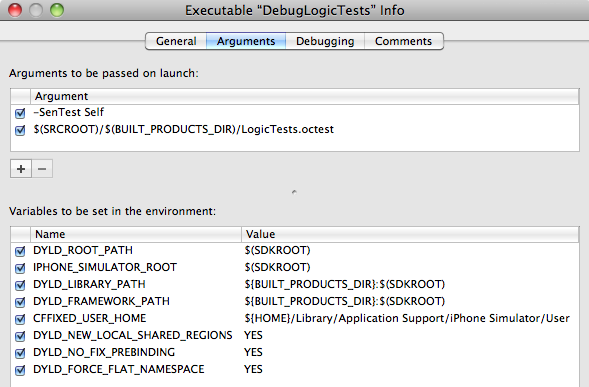
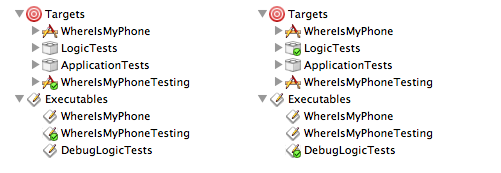

Please note: this article is part of the older "Objective-C era" on Cocoa with Love. I don't keep these articles up-to-date; please be wary of broken code or potentially out-of-date information. Read "A new era for Cocoa with Love" for more.
A sample iPhone application with complete unit tests
In this post, I present a complete Cocoa Touch iPhone application implemented with unit tests for all created code. I'll look at setting up build and debug targets and executables for both Application and Logic tests, and show you some of the differences between Application and Logic tests.
The code for this post is an iPhone version of the Mac post I presented last week.
Xcode unit testing targets for the iPhone
Like Mac unit testing, unit testing targets on the iPhone are generally divided into two types:
- Logic tests — these are run in a executable that is separate from your application. The separate build can be easier to manage, faster to build and is easier to run objects in isolation since it avoids the application setup. However, you cannot test components which rely on the application (which is most user interface components). Generally, this type of test target is intended for libraries, frameworks and testing the back-end (model components of model-view-controller) of your application.
Logic tests are easily run at build-time or from the command-line, which is helpful for continuous integration or automated test processes.
- Application tests — these tests let the application load first and are subsequently loaded into the existing application. This means that the full application environment is available to your tests. In many cases, controller tests and view tests need to be run as application tests since they are reliant on the full environment.
Application tests allow your application to be tested in a more realistic environment, reducing the chance that environment or integration level issues will be missed. They are normally run as a separate step (not as part of the build) and therefore may be less convenient for tests that need to be run every time.
In last week's post on Mac development, I covered the Application Tests exclusively. For the iPhone, I will cover both. The reason for this is:
iPhone Application Tests will only run on the device.
This is annoying. It means that you must have a device connected to your test machine via USB to run Application Tests and endure the slow copy-to-device and slow gdb interaction speeds. Apple could have allowed the simulator to perform the same bundle injection but they have not.
There are alternatives to this approach. You could probably run a regular iPhone application in the simulator and invoke SenTestingKit manually after your application starts. There's also Google's Toolbox for Mac has an iPhone Unit Testing approach that runs in the simulator.
But I'm going to keep to the default OCUnit approaches used in Xcode, so I'll show you how to configure both Application Tests and Logic Tests and I'll show you the sorts of tests that will run in both and which will require the full Application Test to run.
To be clear: if you want to run Logic Tests for your Mac applications, you can follow almost exactly the same approach that I present here. For Mac applications though, since you can invoke the ApplicationTests from the command line (as a post-build step or integration step) I would not normally consider the hassle of maintaining an extra build target and executable worth the effort.
iPhone project configuration
Unit testing targets
After you've created a blank project, use the "Project→New Target..." menu item to add two new "Cocoa Touch→Unit Testing Bundle" Targets to the project. These will be the ApplicationTests and LogicTests bundles.
Be wary of target memberships: When you add bundle resources and sources-to-compile to the original project, also add these to the LogicTests target but do not add them to the ApplicationTests target. Testing-specific files should be added to the LogicTests target and the ApplicationTests target but not to the original project.
As with the Mac project configuration, that's sadly not enough to make it work.
First, drag your original application's target onto the ApplicationTests and LogicTests targets to create a dependency (force the application to build before the unit tests).
Then delete the Run Script phase of the ApplicationTests testing target. It's only for logic tests and won't work for application tests.
Then edit the ApplicationTests target's settings (Right click→Get Info) and set the "Build→Linking→Bundle Loader" for all configurations to:
$(CONFIGURATION_BUILD_DIR)/WhereIsMyPhone.app/WhereIsMyPhonewhere "WhereIsMyPhone" is the name of the application you're unit testing. As with the Mac setup, this step lets the testing target link against the application (the ApplicationTests target doesn't include the original source files and we don't want linker errors when compiling). Unlike the Mac setup, we don't need to set the "Unit Testing→Test Host" (since we can't run using the build-time step).
On the build configuration, also add APPLICATION_TESTS to the "GCC 4.2 - Preprocessing→Preprocessor Macros". This will let us flag certain tests for running in the ApplicationTests bundle but not the LogicTests.
It'd be nice to use the OCMock framework but the iPhone doesn't allow dynamic linking. Instead we need to take the OCMock source code from, OCMock on GitHub, take the non-test-related files and add them directly to both unit testing targets' "Compile Sources" phases. To get it to compile for the iPhone you'll need to replace isEqualTo: in OCMConstraint.m with isEqual:, the import of <objc/objc-runtime.h> in OCPartialMockObject.m with <objc/runtime.h> and the typeof in OCMArg.h with __typeof.
To ensure that the compiler will find the OCMock headers you will also need to add $SRCROOT (non-recursive) to the Project Settings ("Project→Edit Project Settings") under "Build→Search Paths→Header Search Paths" (for all Configurations).
Debugging setup for the ApplicationTests target
To run the application tests, we need to make a copy of the original iPhone application's target (Right Click→Duplicate) — give it a name like "WhereIsMyPhoneTesting" to distinguish from the original "WhereIsMyPhone" target.
Separate targets again: You will need to keep the duplicate in sync with the original. This means that all source files and resources added to the application should also be added to the testing target.
With all these separate targets, it's worth noting that you don't need to add to each target separately — when you're adding a new file to the project, you are normally given the list of targets and you select the checkboxes for the appropriate targets all at once. Don't add test files to the application and don't add application files to the ApplicationTests target and everything will work.
Drag the ApplicationTests target onto this duplicate (to make the duplicate dependent on the application testing bundle). Also drag the application testing bundle (in the Group Tree under Products named ApplicationTests.octest) to the new "WhereIsMyPhoneTesting" target's "Copy Bundle Resources" phase.
Finally, in the settings for the "WhereIsMyPhoneTesting" target, for all Configurations set the "Build→Packaging→Product Name" to something distinct from the original target (e.g. change "WhereIsMyPhone" to "WhereIsMyPhoneTesting").
iPhone application tests only work on the device.
To run the iPhone's application unit tests, you must build and install onto a device. They will not load in the simulator. Yes, this is annoying. Please request simulator support for Application Tests in future iPhone SDK releases if this bothers you.
To set breakpoints and interactively debug, you'll need to build the WhereIsMyPhoneTesting target before running the WhereIsMyPhoneTesting executable on your device. If the project contains the custom executable (from the LogicTests setup below) you may need to set the project's Executable (from the "Project→Set Active Exectuable..." menu) to WhereIsMyPhoneTesting manually.
Debugging setup for the LogicTests target
For the logic tests, we don't create another target but we do need to create a custom executable ("Project→New Custom Executable...") named "DebugLogicTests" or similar with a path relative to the Current SDK of:
Developer/usr/bin/otestThis is Apple's test harness and will handle the work of running the LogicTests bundle headlessly in the iPhone Simulator.
You also need to set the Arguments and Environment for this executable to work. Double click the DebugLogicTests item in the Executables section of the Group Tree and edit the Arguments tab to look like this:
Warning: order of arguments is important (the "-SenTest Self" must be first).
Note: If you're in a hurry, theDLYD_ROOT_PATHandDYLD_FORCE_FLAT_NAMESPACEare normally enough to get it running. The rest relate to minor configuration points that you may want or need eventually but which aren't critical — however, they may cause unexpected runtime behavior if missing.
To set breakpoints and interactively debug, you'll need to build the LogicTests target before running the DebugLogicTests executable in the simulator. Since the project contains a custom executable you may need to set the project's Executable (from the "Project→Set Active Exectuable..." menu) to DebugLogicTests first.
The project on the left is configured to run Application tests.
The project on the right is configured to run Logic tests.
Set Target and Executable to "WhereIsMyPhone" to run the application as normal.
If you have tests running at build-time that fail but the actual compile has succeeded, you can Debug without rebuilding by pressing Command-Option-Return ("Run→Debug").
The sample iPhone application
As with last week, the sample application is a recreation of my earlier post, WhereIsMyMac, this time written for the iPhone using a test-first approach to development.
With so much discussion about how to set up the Xcode project, I might keep the discussion of the tests themselves quite brief. If you want to know more about the implementation of the tests, they are almost identical to last week's — I deliberately chose this application because the implementation is very similar on the Mac and iPhone — so I encourage you to read through the writing of the tests from that post.
The only significant differences between the iPhone and Mac applications are that the Window Controller from last week is a View Controller in the iPhone version, NSTextFields are now UILabels and the UIWebView that the iPhone version contains is simpler than the WebView on the Mac, so the mainFrame access never occurs on the iPhone.
There is no application for the LogicTests
What I'll focus on this time, are the differences between the Mac and iPhone tests and implementations. Here's an example:
#ifdef APPLICATION_TESTS
- (void)testAppDelegate
{
id appDelegate = [[UIApplication sharedApplication] delegate];
STAssertNotNil(appDelegate, @"Cannot find the application delegate.");
}
#endifOn the Mac, this code was almost the same (NSApplication instead of UIApplication). The big difference is that I've wrapped the entire test in #ifdef APPLICATION_TESTS since the application delegate does not exist in the logic tests, we must ensure this test is only run for application tests (we added the APPLICATION_TESTS preprocessor macro to the ApplicationTests target only).
LogicTests are a different bundle
The next big difference is that the actual application code, which runs out of the mainBundle in the regular application, runs out of the LogicTests.octest bundle that otest loads in the LogicTests target. To make code that accesses the bundle work the same, independent of where it is running, all NSBundle access is handled by class.
For example, the code in WhereIsMyPhoneViewController.m that generates the HTML to send to the UIWebView fetches the structure of the HTML from a file with:
[[NSBundle bundleForClass:[self class]]
pathForResource:@"HTMLFormatString"
ofType:@"html"]Previously, I would have used [NSBundle mainBundle] here but that code failed when run in the LogicTests. The [NSBundle bundleForClass:[self class]] will find the bundle that contains the class whether it is the main bundle or the LogicTests.octest bundle loaded by otest.
Many UIKit classes won't work without the UIApplication
Trying to add code to pass the tests in this project revealed that other tests would have to be conditionally excluded from LogicTests as well:
- The default
loadViewmethod will fail — so thetestLoadViewmethod is#ifdef'd out. - Any attempt to
alloc/initaUILabelwill fail. I don't know why but because of this, all tests on the labels must be#ifdef'd.
Generally, don't expect anything from the UIKit framework to work in your Logic tests. Other frameworks will almost always work (in this application, the CoreLocation and Foundation frameworks work without issue).
Within UIKit, some elements will work — for example, UIWebView didn't have any issues in my testing. Exactly which user-interface objects will fail in the LogicTests bundle (without an actual running application) is never really clear until you try but these failures are why you still need to run the Application Tests to verify against — the Application Tests are a more authoritative result for anything in UIKit.
Conclusion
Download the complete WhereIsMyPhone-WithUnitTests.zip (85kb).
Warning: custom executables (like the DebugLogicTests executable) are user data in the project file. If you make changes that you want to share with someone else, you will need to rename the (your username).pbxuser file in the .xcodeproj bundle to default.pbxuser (so that it applies to all users).
This project includes code from the OCMock framework, which is Copyright (c) 2004-2009 by Mulle Kybernetik. OCMock is covered by its own license (contained in the OCUnit/License.txt file in the download).
The code for this post is largely been a repeat of last week's post for the benefit of iPhone programmers. You can have a look at the differences for yourself but I deliberately chose this project because the iPhone and Mac implentations are so similar.
I have taken the time though to show you how you can maintain a LogicTests target (in addition to the application-wide ApplicationTests target) that can test most of your project outside the application environment — including most of the user-interface controller code. The purpose is to sidestep the "device-only" limitations of the current OCUnit testing for the iPhone but also to show how you could set up build-time unit tests for part of your application, without necessarily applying this approach to your entire project.
A sample Mac application with complete unit tests